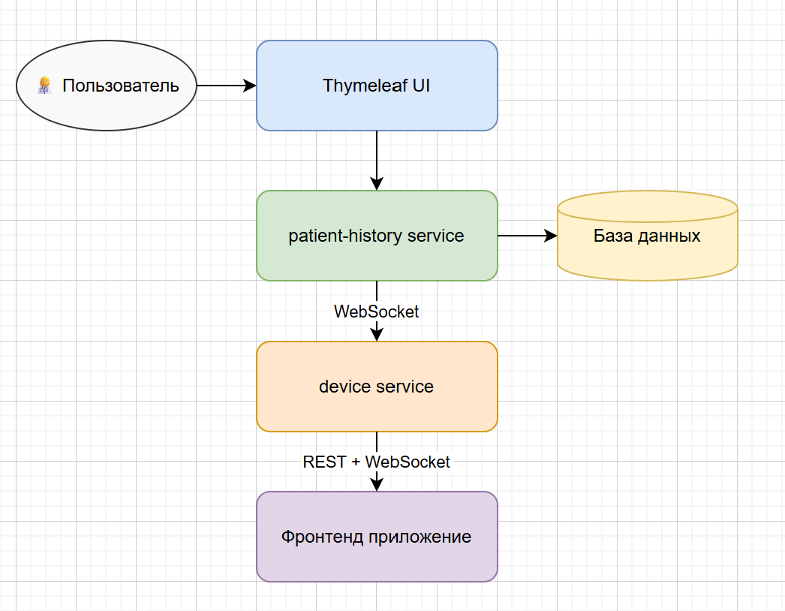
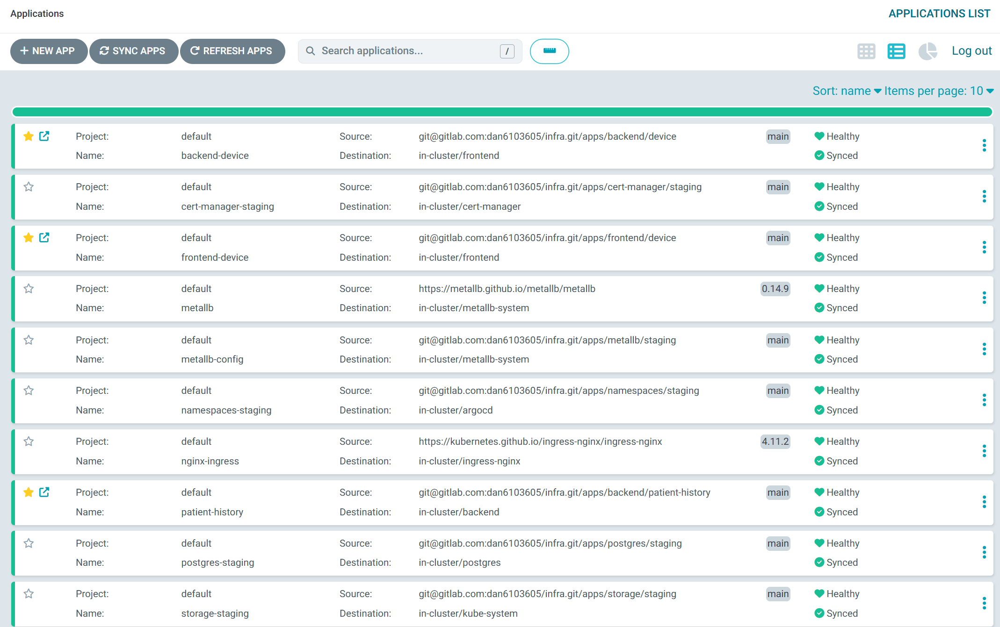

Введение
Данный сервис представляет собой цифрового ассистента для врачей родильных отделений разработанный командой BroCode в рамках хакатона ЛЦТ 2025, направленного на
автоматизацию мониторинга и анализа данных с фетальных мониторов. Основная цель — облегчить
интерпретацию сложных медицинских сигналов и визуализировать динамику в наглядной форме, что позволяет
медицинскому персоналу быстрее и точнее принимать решения в условиях повышенной нагрузки.
В отличие от методов машинного обучения, в нашем решении применяются алгоритмы детерминированного анализа
и распознавания ключевых паттернов в реальном времени. Система обрабатывает потоковые и архивированные
данные, выявляя важные параметры, такие как децелерации, тахикардия, брадикардия и вариабельность
сердечного ритма, а также строит краткосрочные прогнозы на основе текущих и исторических данных.
Архитектура

Проект состоит из трех основных компонентов:
Сервис patient-history (Spring Boot)
репозиторий
- Хранит данные пациенток, поступающие с медицинских приборов: показатели сократительной активность матки (uterus) и частоту
сердечных сокращений плода (bpm) во время родов.
- Взаимодействие с пользователем происходит через встроенный Thymeleaf.
- Сервис способен запускать поток данных через WebSocket, имитируя работу медицинских приборов в
реальном времени.
Сервис device (Spring Boot)
репозиторий
- Читает данные с WebSocket сервиса patient-history.
- Обрабатывает и анализирует данные, выделяя необходимые параметры и формируя предсказания.
- Передает обработанные данные через свой WebSocket.
Фронтенд-приложение
репозиторий
- Периодически обращается к REST API сервиса device для получения данных о пациенте.
- Подписывается на WebSocket сервиса device для получения данных в реальном времени.
- Отображает графики и визуализации данных для удобства врачей.
Взаимодействие между сервисами основано на REST и WebSocket, обеспечивая обработку и визуализацию данных
в режиме реального времени. База данных хранит историю данных, что позволяет проводить анализ и
мониторинг динамики состояний пациенток.
Основная причина использование WebSocket для потоковой передачи данных: скорость и простота применения, в
сравнении с различными брокерами сообщений.
Документация
репозиторий
Репозиторий, в котором описана документация к проекту.
Инфраструктурные решения

Проект развернут в Kubernetes-кластере из двух нод — одна мастер-нодa и одна воркер-нодa. Такой подход
обеспечивает баланс между простотой поддержки и отказоустойчивостью, что важно для стабильной работы
медицинского сервиса в режиме 24/7.
Управление кластером
- Для управления кластером используется Argo CD
- Автоматизация процесса доставки кода (Continuous Delivery)
- Централизованный просмотр логов
- Визуальный контроль состояния сервисов в кластере
Безопасность
- Для управления сертификатами применён cert-manager
- Автоматическое создание и обновление TLS-сертификатов
- Упрощение безопасности сетевого взаимодействия
CI/CD процесс
- Исходный код хранится в GitHub
- При пуше в ветку master автоматически запускаются GitHub Actions
- Последовательное выполнение сборки, тестирования и деплоя приложений
- Создание контейнера при успешном билде и тестах
- Сохранение контейнера в GitHub Container Registry
Автоматизация деплоя
- Инфраструктурный репозиторий синхронизирован с Argo CD
- Отслеживание тегов контейнеров
- Автоматический деплой нового контейнера в продакшен при обнаружении нового тега
- Обеспечение непрерывного обновления приложения
Установка
Шаги по установке...

Использование
Пример работы
Ссылка на сервис, работающий с хранением и передачей данных
https://patient-history.kumiko.pro/login
PATIENT_LOGIN: "asdf123fhgf562"
PATIENT_PASSWORD: "ds31d124cxv"
Ссылка на сервис, производящий вычисления и показывающий визуализацию (если в течении 10 секунд, после отправки данных, не появился график: просьба обновить страницу)
https://device.kumiko.pro/
После входа в сервис хранения и обработки данных доступны страницы с пациентами и диагнозами.
Пациентов и диагнозы можно создавать, удалять и редактировать.
При выборе пациентов стоит учитывать, что чем больше у него батчей, тем дольше происходит его открытие.
Это связано с выгрузкой данных с приборов и отрисовкой.
В будущем, в обычном использовании рекомендуется их поменять на картинки, а от выгрузки данных отказаться.
Решение рисовать графики было принято на начальном этапе для визуализации данных(это было полезно).
Так, при загрузке "тяжелого" пациента может потребоваться ждать 20-30 секунд.
После того как пациент был выбран, доступны выгрузка данных батча в формате pdf, а так же отправка этих данных в потоковом режиме в WebSocket
Сервис, анализирующий данные, постоянное слушает WebSocket отправителя. После поступления данных через 5-10 секунд они начинают отображаться в
https://device.kumiko.pro/
Eсли в течение 10 секунд, после отправки данных, не появился график: просьба обновить страницу
Алгоритм обработки данных для оценки рисков гипоксии плода
Сервис, занимающийся потоковой обработкой данных
Алгоритм работает в реальном времени: получает данные о пациенте и медицинские показатели, анализирует их по
временным интервалам, проверяет риски осложнений и формирует предсказания. Для простоты фокус на
основных этапах без технических деталей реализации.
Преимущества алгоритма:
- Не требователен к ресурсам
- Легкий в понимании
- Доступна тонкая настройка для каждого осложнения/диагноза/заболевания
- Алгоритм легко расширяется с помощью добавления новых метрик
- Данные об осложнениях/диагнозах/заболеваниях не привязаны жестко к коду, т.е. для изменения "влияния" достаточно поменять только метаданные модели
Минусы:
- Требуется провести аналитическую работу по влиянию каждого осложнения/диагноза/заболевания как по отдельности, так и вместе
Алгоритм разделен на 4 части, как указано в запросе.
1. Подготовительная часть
На этом этапе обрабатываются начальные данные о пациенте, полученные через WebSocket (PatientDataWebSocket).
Цель — установить персонализированные нормы и базовый риск рождения ребенка с гипоксией на основе
диагнозов пациента. Делается это с помощью формул Groovy, которые хранятся в поле "impact" для каждого диагноза
2. Сбор данных в пачки для вычисления средних показателей
Медицинские данные (MedicalDataWebSocket) поступают в реальном времени: время в секундах
(timeSec), сократительная активность матки (uterus) и частота сердечных
сокращений плода (bpm).
Во время поступления данных они отправлятся на фронтенд для отрисовки графика, параллельно собираются показатели,
для поиска среднего значения за отрезок времени. Величину временного интервала можно задавать отдельно.
3. Проверка осложнений в конце каждого промежутка
После закрытия окна запускается анализ рисков на основе списка осложнений (Complications).
Каждое осложнение имеет поле condition — Groovy-скрипт, который проверяет наличие риска по
текущим средним значениям.
- Шаги обработки:
- Перебор осложнений: Для каждого объекта
Complications выполняется скрипт в
condition.
- Обновление счетчиков рисков: Для каждого осложнения ведется отдельный счетчик (в мапе
riskCounters,
ключ — ID осложнения).
- Если риск = true: счетчик +1 (риск накапливается при повторении).
- Если риск = false: счетчик -2 (риск быстро снижается при нормализации), но не ниже
0.
- Влияние на общий риск: Каждый активный счетчик (>0) прибавляет к динамическому риску
гипоксии. Суммарный счетчик всех осложнений (total) умножается на 5% для динамической части
риска.
- Результат: Обновлены счетчики для каждого осложнения. Это моделирует "память"
системы: повторяющиеся риски усиливают общий шанс гипоксии, а исчезающие — снижают его.
4. Формирование предсказания с перечислением осложнений и шансом гипоксии
После анализа создается объект Prediction и отправляется по WebSocket (/topic/predictions).
- Шаги обработки:
- Сбор активных осложнений: Список имен осложнений, где счетчик > 0.
- Формирование сообщения (
message):
- Если активных нет: "Прогноз положительный".
- Если есть: "Активные осложнения: [имя1, имя2, ...]".
- Определение уровня серьезности (
severity):
- Суммарный счетчик (total) всех осложнений:
- >6: "negative" (высокий риск).
- =0: "positive" (низкий риск).
- Иначе: "normal" (средний риск).
- Расчет шанса гипоксии (
riskComplication):
- Базовый риск (из части 1,
riskComplications).
- Динамический риск: total * 5% (ограничено до 100%).
- Итоговый шанс: базовый + динамический (ограничено 0–100%).
- Добавление времени:
timestamp = текущее время.
- Результат: Готовое предсказание с текстом, уровнем серьезности и шансом родов с
гипоксией. Это позволяет пользователю (врачу) быстро оценить ситуацию и принять меры.
Разбор осложнений
1. Децелерация
Описание: Эпизод снижения частоты сердечных сокращений (ЧСС) плода на 15 ударов в минуту и более с продолжительностью не менее 15 секунд.
Клиническое значение: Может указывать на гипоксию плода, компрессию пуповины или плацентарную недостаточность.
Формула (Groovy):
(prevAvgBpm - avgBpm) >= 15 && avgBpm < bpmMin
Логика: Проверяется, снизилась ли ЧСС плода относительно предыдущего периода минимум на 15 уд/мин и опустилась ниже нижней границы нормы (bpmMin).
2. Тахикардия
Описание: Увеличение частоты сердечных сокращений плода выше физиологической нормы.
Клиническое значение: Может быть следствием гипоксии, лихорадки матери, инфекции или реакции на лекарственные препараты.
Формула (Groovy):
avgBpm > bpmMax
Логика: Если средняя ЧСС превышает верхнюю допустимую границу (bpmMax), фиксируется риск тахикардии.
3. Брадикардия
Описание: Замедление частоты сердечных сокращений плода ниже физиологической нормы.
Клиническое значение: Может указывать на выраженную гипоксию, сдавление пуповины или тяжелую брадикардию вследствие медикаментов.
Формула (Groovy):
avgBpm < bpmMin
Логика: Если средняя ЧСС ниже нижнего допустимого порога (bpmMin), фиксируется риск брадикардии.
4. Вариабельность сердечного ритма
Описание: Колебания интервалов между ударами сердца, отражающие способность сердечно-сосудистой системы плода адаптироваться к изменениям.
Клиническое значение:
- Низкая вариабельность (<5 уд/мин) — может быть признаком угнетения ЦНС плода, гипоксии или воздействия седативных препаратов.
- Чрезмерная вариабельность (>25 уд/мин) — признак возможных аритмий или острой гипоксии.
Формула (Groovy):
Math.abs(avgBpm - prevAvgBpm) < 5 || Math.abs(avgBpm - prevAvgBpm) > 25
Логика: Если разница между текущей и предыдущей средней ЧСС слишком мала (<5) или слишком велика (>25), считается, что вариабельность патологическая.
Работа с одноплатным компьютером
Пример работы
Для работы с одноплатным компьютером Orange Pi Zero 3 был установлен в качестве ОС Armbian_25.5.1
Инструкция:
# Базовые пакеты
sudo apt update && sudo apt upgrade -y
sudo apt install -y git curl wget unzip apt-transport-https ca-certificates gnupg lsb-release
# Установка JDK 21
sudo apt install -y openjdk-21-jdk
java -version
# Установка Node.js
curl -fsSL https://deb.nodesource.com/setup_20.x | sudo -E bash -
sudo apt install -y nodejs
node -v
npm -v
В нашем случае используется кубернетес для подключения к источнику потоковых данных
# Установка kubectl
wget https://dl.k8s.io/release/v1.31.1/bin/linux/arm64/kubectl -O kubectl
chmod +x kubectl
sudo mv kubectl /usr/local/bin/
kubectl version --client
Далее настраиваем kube config (файл конфигурации не дам)
# Прокидываем наружу порт для чтения данных
kubectl port-forward -n patient-history pod/patient-history-dep-788599c4c6-bcvg9 8097:8097
Создаем папки для проектов и выгружаем с репозитория
# Перейдём в рабочую папку
mkdir -p ~/projects
cd ~/projects
# Клонируем Spring Boot
git clone https://github.com/Dan9191/device.git
# Клонируем React фронт
git clone https://github.com/Dan9191/medical-frontend.git
В соответствующих папках выполняем команды запуска
# бэкенд
chmod +x gradlew
./gradlew bootRun
#React
npm start